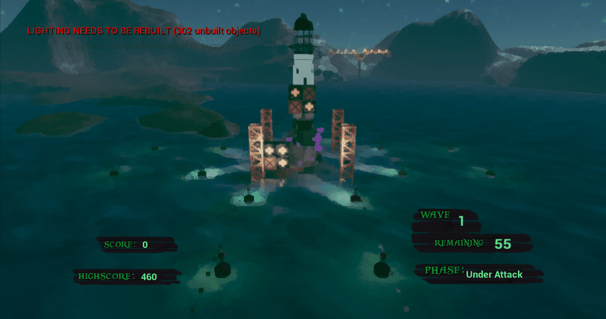
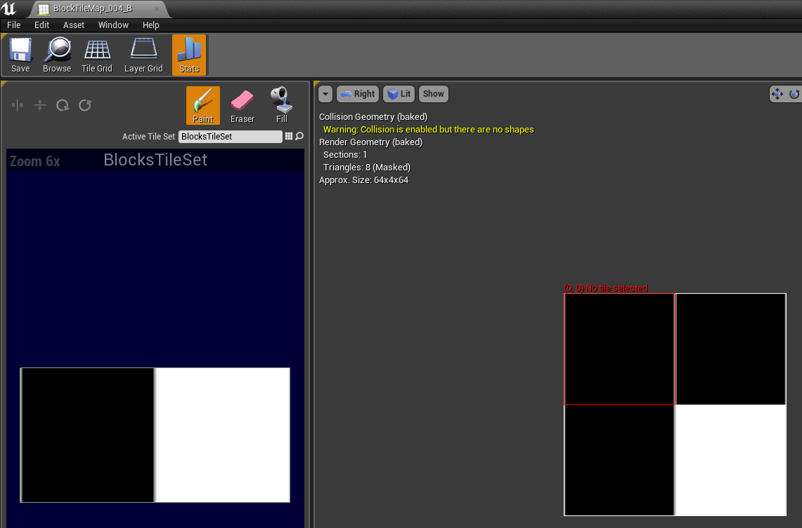
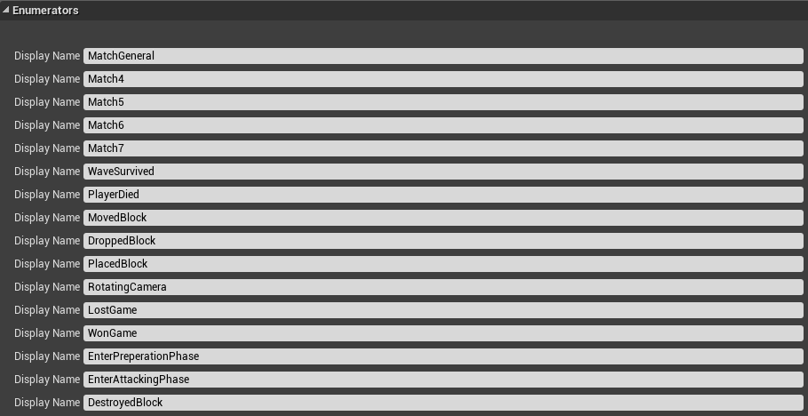
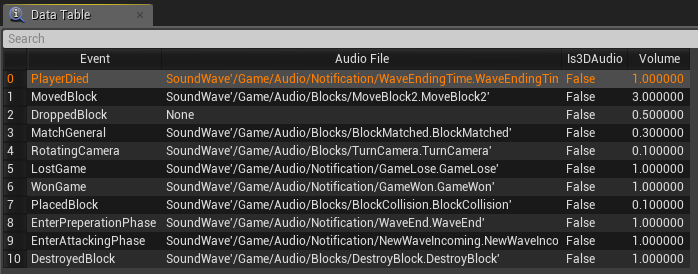
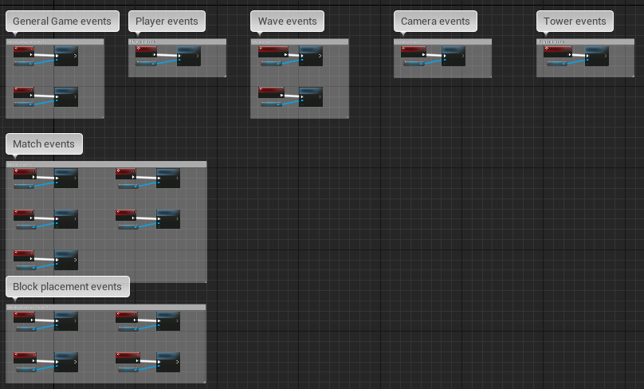

Placing blocks with the physics system of Unreal

Placing blocks with the custom grid system

Placing blocks in the final gameplay
Placing blocks has gone through multiple stages of development. First, the placement of blocks was done using the physics system of Unreal, however I found myself quickly blocking certain axis from using physics since blocks only needed to be able to fall down. This developed into the idea to simulate physics using a grid system instead of using the physics system of Unreal. Gravity on one axis can luckily be simulated quite easily without using too much calculations which made the grid system possible, this is why the decision was made to implement this system instead of going with Unreal physics where each side of the tower now has a 2D like grid structure where each cell is as big as a block, meaning a block can be placed in each cell.
Placing blocks with the physics system of Unreal
Placing blocks with the custom grid system

Placing blocks in the final gameplay
Block structures are generated using the build in TileMap and TileSet plugin of Unreal. This plugin had to be changed internally in C++ by me a tiny bit to support a certain workflow of using this plugin for our project. This plugin is also used by the enemy wave system as a level editor for making waves. I did not work on the enemy waves system though. Blocks are made using this plugin and placed in the game according to the structure of a block which can be seen in the image here. It is a pretty strong system since designers can easily create their own block structures, put that structure into an array of possible structures that can occur in the game and the structure that they made will occur in the game as a block that the player can place.

This decision to use a simulated physics system in the form of a grid led to much more ease when developing other systems such as the match 3 system. A 2D grid is constructed for each side of the tower where each “cell” of these grids holds either a block that has been placed or nothing. A block will then run a recursive check function to check all its parents if that block is a block where a match 3 system can be made with. If this is true, and the chain of blocks is bigger than 3, then a match 3 has been constructed where I immediately know which cell locations hold the blocks that are in this match 3. This whole implementation is possible since a grid system has been set up. Using a none grid system would make the detection of a 3 match much more difficult then the current implementation.

The match 3 system in early development
The match 3 system in final gameplay
The decision was made to make events for this game where certain gameplay functionality can run based on the trigger of these events. A data table screenshot of all possible events in the game is shown on here where also a data table is shown that is specific towards the audio of the game where certain audio will play based on the trigger of each event. The last image here shows a screenshot of the event calls in blueprint.



The main learning points from this project were definitelly that I learned how to how to write dynamic and flexible blueprint code that is able to change a lot since the scope of mechanics shifted a lot due to playtesting and analysis of this. My designers were very happy with me as a programmer since I tried to really be flexible when it comes to writing systems and mechanics in blueprint code.
I also learned in this project how to work with designers since I didn't work together on a game with designers yet when starting this project.
I learned how to extend default plugin code from Unreal since I had to extend the code from the TileMap and TileSet functionality in Unreal to a certain extend so that it worked for our project purposes
{% endblock project_specific %}